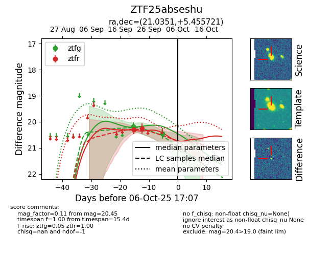
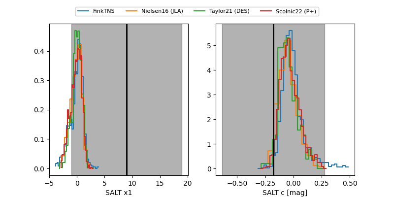

FINK: ZTF25abseshu
Lasair: ZTF25abseshu
ALeRCE: ZTF25abseshu
ZTF25abseshu (ztf,fink)
equatorial (ra, dec) = (21.0351,+5.45572)
galactic (l, b) = (137.7817,-56.47022)


last ztfg=20.45, ztfr=20.26
2 ztfg, 2 ztfr detections